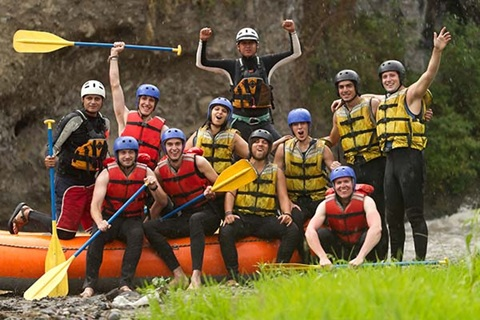

At White Wolf Rafting, we believe that adventure is for everyone. We’ve been connecting thrill-seekers and nature-lovers alike to the untamed beauty of the Canadian Rockies for years, delivering unforgettable white water rafting experiences. Based in Canmore, Alberta, our locally owned company combines world-class guides, high-quality gear, and a deep-rooted love for the outdoors to offer unforgettable tours for you, our guests.
Whether you’re after the heart-pounding rush of rapids or looking to soak in the serene beauty of the Kananaskis River, White Wolf Rafting has you covered. Our tours are carefully crafted to balance excitement with comfort, ensuring you feel both safe and inspired. More than just a rafting company, we’re here to create lasting memories, build connections, and share our passion for this incredible landscape.